전자기사 (2014-03-02 기출문제)
1과목: 전기자기학
1. 전기 쌍극자에 대한 설명 중 옳은 것은?
- 반경 방향의 전계성분은 거리의 제곱에 반비례
- 전체 전계의 세기는 거리의 3승에 반비례
- 전위는 거리에 반비례
- 전위는 거리의 3승에 반비례
(정답률: 62%)

2. 간격에 비해서 충분히 넓은 평행판 콘덴서의 판사이에 비유전율 Єs인 유전체를 채우고 외부에서 판에 수직방향으로 전계 E0를 가할 때 분극전하에 의한 전계의 세기는 몇 [V/m]인가?
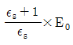
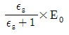
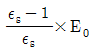
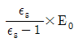
(정답률: 50%)
3. 공기 중에 있는 지름 2m의 구도체에 줄 수 있는 최대 전하는 약 몇 [C]인가? (단, 공기의 절연내력은 3000[kV/m]이다.)
- 5.3×10-4
- 3.33×10-4
- 2.65×10-4
- 1.67×10-4
(정답률: 29%)
4. 와전류손(eddy current loss)에 대한 설명으로 옳은 것은?
- 도전율이 클수록 작다.
- 주파수에 비례한다.
- 최대자속밀도의 1.6승에 비례한다.
- 주파수의 제곱에 비례한다.
(정답률: 25%)
5. 방송국 안테나 출력이 W(W)이고 이로부터 진공 중에 r(m) 떨어진 점에서 자계의 세기의 실효치 H는 몇 [A/m]인가?
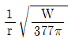
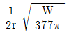
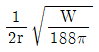
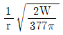
(정답률: 60%)
6. 평행판 콘덴서의 극판 사이에 유전율이 각각 ε1, ε2인 두 유전체를 반씩 채우고 극판 사이에 일정한 전압을 걸어줄 때 매질 (1), (2) 내의 전계의 세기 E1, E2사이에 성립하는 관계로 옳은 것은?
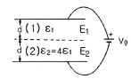
- E2=4E1
- E2=2E1
- E2=E1/4
- E2=E1
(정답률: 43%)
7. 단면적 S, 길이 ℓ, 투자율 μ인 자성체의 자기회로에 권선을 N회 감아서 I의 전류를 흐르게 할 때의 자속은?
- μSI/Nℓ
- μNI/Sℓ
- NIℓ/μS
- μSNI/ℓ
(정답률: 65%)
8. 손실유전체(일반매질)에서의 고유임피던스는?
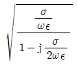
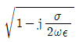
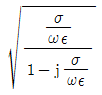
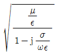
(정답률: 45%)
9. 자기 감자율 N=2.5×10-3, 비투자율 μs=100의 막대형 자성체를 자계의 세기 H=500[AT/m]의 평등자계 내에 놓았을 때 자화의 세기는 약 몇 [Wb/m2]인가?
- 4.98×10-2
- 6.25×10-2
- 7.82×10-2
- 8.72×10-2
(정답률: 5%)
10. 다음 설명 중 옳지 않은 것은?
- 전류가 흐르고 있는 금속선에 있어서 임의 두 점간의 전위차는 전류에 비례한다.
- 저항의 단위는 옴(Ω)을 사용한다.
- 금속선의 저항 R은 길이 ℓ에 반비례한다.
- 저항률(ρ)의 역수를 도전율이라고 한다.
(정답률: 53%)
11. 전속밀도가 D=e-2y(axsin2x+aycos2x)[C/m2]일 때 전속의 단위 체적당 발산량[C/m3]은?
- 2e-2ycos2x
- 4e-2ycos2x
- 0
- 2e-2y(sin2x+cos2x)
(정답률: 44%)
12. x＜0 영역에는 자유공간, x＞0 영역에는 비유전율 Єs=2인 유전체가 있다. 자유공간에서 전 E=10ax가 경계면에 수직으로 입사한 경우 유전체 내의 전속밀도는?
- 5Є0ax
- 10Є0ax
- 15Є0ax
- 20Є0ax
(정답률: 10%)
13. 평면도체 표면에서 d[m] 거리에 점전하 Q[C]이 있을 때, 이 전하를 무한원점까지 운반하는데 필요한 일[J]은?
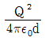
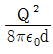
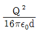
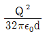
(정답률: 64%)
14. 대지면에 높이 h로 평행하게 가설된 매우 긴 선전하가 지면으로부터 받는 힘은?
- h2에 비례한다.
- h2에 반비례한다.
- h에 비례한다.
- h에 반비례한다.
(정답률: 37%)
15. 그림과 같이 균일하게 도선을 감은 권수 N, 단면적 S[m2], 평균길이 ℓ[m]인 공심의 환상솔레노이드에 I[A]의 전류를 흘렸을 때 자기인덕턴스 L[H]의 값은?
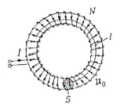
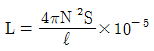
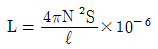
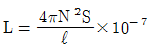
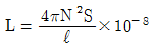
(정답률: 60%)
16. 다음 ( ) 안에 들어갈 내용으로 옳은 것은?
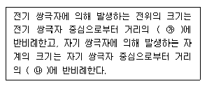
- ㉮ 제곱, ㉯ 제곱
- ㉮ 제곱, ㉯ 세제곱
- ㉮ 세제곱, ㉯ 제곱
- ㉮ 세제곱, ㉯ 제곱
(정답률: 55%)
17. 정전계와 정자계의 대응관계가 성립되는 것은?
- divD=ρv → divB=ρm
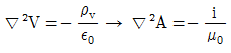
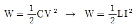
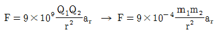
(정답률: 63%)
18. 반지름 a[m], 단위 길이당 권수 N, 전류 I[A]인 무한 솔레노이드 내부 자계의 세기[A/m]는?
- NI
- NI/2π
- 2πNI/a
- aNI/2π
(정답률: 45%)
19. 무한장 직선형 도선에 I[A]의 전류가 흐를 경우 도선으로부터 R[m] 떨어진 점의 자속밀도 B[Wb/m2]는?
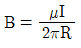
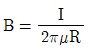
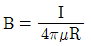
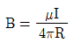
(정답률: 40%)
20. 자기인덕턴스 L1, L2와 상호인덕턴스 M 사이의 결합계수는? (단, 단위는 H이다.)
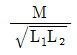
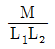
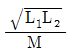
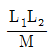
(정답률: 64%)
2과목: 회로이론
21. 선형 회로망에 가장 관계가 있는 것은?
- 중첩의 정리
- 테브난의 정리
- 키르히호프의 법칙
- 보상의 정리
(정답률: 32%)
22. 다음 회로의 구동점 임피던스가 정저항 회로가 되기 위한 Z1, Z2 및 R의 관계는?
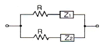
- Z1Z2=R
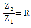
- Z1Z2=R2
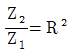
(정답률: 37%)
23. "회로망 중의 임의의 폐회로에 있어서 그 각지로(枝路)의 전압 강하의 총합은 그 폐회로 중의 기전력의 총 합과 같다." 이와 관계되는 법칙은?
- 플레밍의 법칙
- 렌쯔의 법칙
- 패러데이의 법칙
- 키르히호프의 법칙
(정답률: 53%)
24. RL 직렬회로에 일정한 정현파 전압이 인가되었다. 이때, 인가된 신호원과 저항 및 인덕터에서의 전류 위상 관계를 올바르게 설명한 것은?
- 저항 및 신호원과 인덕터에서의 전류 위상은 모두 동일하다.
- 저항에서의 전류가 신호원 및 인덕터에서의 전류보다 빠르다.
- 저항과 신호원에서의 전류가 인덕터에서의 전류보다 빠르다.
- 인덕터에서의 전류가 저항 및 신호원에서의 전류보다 빠르다.
(정답률: 23%)
25. 다음과 같은 R-C 회로의 구동점 임피던스로 옳은 것은?
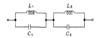
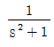
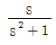
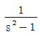
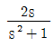
(정답률: 20%)
26. 구동점 임피던스에서 영점(zero)은?
- 전압이 가장 큰 상태이다.
- 회로를 개방한 상태이다.
- 회로를 단락한 상태이다.
- 전류가 흐르지 않는 상태이다.
(정답률: 47%)
27. 그림은 이상적 변압기이다. 성립되지 않는 관계식은? (단, n1, n2는 1차 및 2차 코일의 권회수,
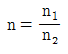
이다.)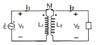
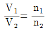
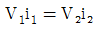
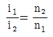
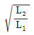
(정답률: 40%)
28. 다음과 같은 파형에 대한 라플라스 변환은?
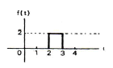
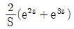
(정답률: 19%)
29. 1[μF]인 정전 용량을 가지는 콘덴서에 실효값1414[V], 주파수 10[kHz], 위상각 0인 전압을가했을 때 순시값 전류는 약 얼마인가?
- 89 sin(ωt-90°)
- 89 sin(ωt+90°)
- 126 sin(ωt-90°)
- 126 sin(ωt+90°)
(정답률: 16%)
30. 다음 중 쌍대관계(dual)가 아닌 것은?
- 전압과 전류
- 단락과 개방
- 전압원과 전류원
- 나뭇가지전압과 링크전압
(정답률: 50%)
31. 두 개의 코일 L1과 L2를 동일방향으로 직렬 접속하였을 때 합성인덕턴스가 100[mH]이고, 반대방향으로 접속하였더니 합성인덕턴스가 40[mH]이었다. 이 때, L1=60[mH]이면 결합계수 k는 약 얼마인가?
- 0.5
- 0.6
- 0.7
- 0.8
(정답률: 23%)
32. 다음 중 4단자 파라미터 간의 관계식으로 상반성(reciprocity)과 관계없는 것은?
- h12=h21
- Y12=Y21
- AD-BC=1
- Z12=Z21
(정답률: 17%)
33. 그림의 회로에서 릴레이의 동작 전류는 10[mA], 코일의 저항은 1[kΩ], 인덕턴스는 L[H]이다. 가 닫히고 18[ms] 이내로 이 릴레이가 작동하려면 L[H]은 약 얼마인가?
- 18[H]
- 26[H]
- 34[H]
- 56[H]
(정답률: 15%)
34. 다음 그림에 있어서 e(t)=Em cos ωt의 전원 전압을 인가했을 때 인덕턴스 L에 저축되는 에너지는?
(정답률: 0%)
35. 임피던스 함수 로 표시되는 2단자 회로망을 도시하면?
(정답률: 44%)
36. 그림과 같은 회로에서 전압 V는 몇 [V]인가? (단, V는 단상교류 전압임)
- 1
- 5
- 7
- 15
(정답률: 15%)
37. 다음 그림에서 스위치 S를 닫은 후의 전류 i(t)는? (단, t=0에서 I=0이다.)
(정답률: 12%)
38. f(t)=1e-at의 라플라스 변환은? (단, a는 상수이다.)
- μ(s)-e-as
- 2S+s/S(S+a)
- a/S(S+a)
- a/S(S-a)
(정답률: 35%)
39. 2단자 임피던스가 일 때 극점(pole)은?
- -3
- 0
- -1, -2
- -1, -2, -3
(정답률: 30%)
40. 100[V]에서 250[W]의 전력을 소비하는 저항을 200[V]에 접속하면 소비전력은?
- 100[W]
- 250[W]
- 500[W]
- 1000[W]
(정답률: 22%)
3과목: 전자회로
41. 다음 회로에서 콘덴서 C의 역할은?
- 중화용
- 기생진동방지용
- 상호변조방지용
- 저주파특성 개선용
(정답률: 24%)
42. 다음의 B급 푸시풀 증폭기에서 최대 신호 출력 전력은? (단, 입력신호는 정현파이다.)
(정답률: 27%)
43. 다음 회로는 BJT의 소신호 등가 모델이다. 역기서 ro와 가장 관련이 깊은 것은?
- Early 효과
- Miller 효과
- Pinchoff 현상
- Breakdown 현상
(정답률: 37%)
44. 하틀리(Hartley) 발진기 회로에서 궤환 요소는?
- 용량
- 저항
- FET
- 코일
(정답률: 40%)
45. 다음 중 턴-오프 시간(turn-off time)은?
- 축적시간과 하강시간의 합이다.
- 상승시간과 지연시간의 합이다.
- 상승시간과 축적시간의 합이다.
- 상승시간과 하강시간의 합이다.
(정답률: 30%)
46. 3배 전압기의 입력 전압이 10Vrms일 때 직류 출력의 최대값은 약 몇 [V]인가?
- 27.9[V]
- 30.2[V]
- 32.1[V]
- 42.4[V]
(정답률: 39%)
47. 10진수 87를 BCD 코드로 변화시킨 것은?
- 10000111
- 11111111
- 01111000
- 01010111
(정답률: 20%)
48. 트랜지스터의 ha 정수를 측정할 때 필요한 조건은?
- 출력 단자를 개방시킨다.
- 출력 단자를 단락시킨다.
- 입력 단자를 개방시킨다.
- 입력 단자를 단락시킨다.
(정답률: 7%)
49. h정수 중에서 hie는 무엇을 정의한 것인가?
- 전류이득
- 입력 임피던스
- 출력 어드미턴스
- 역방향 궤환 전압이득
(정답률: 18%)
50. 트랜지스터의 고주파 특성으로 차단주파수 fa는?
- 베이스 주행시간에 비례한다.
- 베이스 폭의 자승에 비례한다.
- 정공의 확산계수에 반비례한다.
- 베이스 폭의 자승에 반비례하고 정공의 확산계수에 비례한다.
(정답률: 32%)
51. RC 결합 증폭기에서 구형파 전압을 입력시켜 다음과 같은 출력이 나온다면 이 증폭기의 주파수 특성은?
- 고역특성이 주로 좋지 않다.
- 저역특성이 주로 좋지 않다.
- 중역과 고역특성이 주로 좋지 않다.
- 저역과 고역특성이 모두 좋지 않다.
(정답률: 23%)
52. 이미터 접지 증폭기에서 ICO가 100[μA]이고, IB가 1[mA]일 때 컬렉터 전류는 약 몇 [mA]인가?
- 109[mA]
- 120[mA]
- 137[mA]
- 154[mA]
(정답률: 24%)
53. 다음 트랜지스터 소신호 증폭기의 입력(Ri) 및 출력(Ro) 임피던스는 어느 값에 가장 가까운가?
- Ri=42[kΩ], Ro=10[Ω]
- Ri=30[Ω], Ro=102[kΩ]
- Ri=102[kΩ], Ro=30[Ω]
- Ri=10[Ω], Ro=42[kΩ]
(정답률: 22%)
54. 일반적인 궤환회로에서의 전압증폭도를 라고 하면 이 때 부궤환 작용을 할 수 있는 조건은? (단, A는 궤환이 일어나지 않을 때의 이득이다.)
- Aβ=1
- |1-Aβ|＞1
- |1-Aβ|＜1
- Aβ=∞
(정답률: 16%)
55. 다음 회로의 명칭으로 가장 적합한 것은?
- A/D 변환기
- D/A 변환기
- 슈미트 트리거
- 멀티바이브레이터
(정답률: 46%)
56. 다음 회로에서 Re의 주 역할은?
- 출력증대
- 동작점의 안정화
- 바이어스 전압감소
- 주파수 대역폭 증대
(정답률: 40%)
57. 다음 그림은 연산증폭기이다. V1=2[V], V2=3[V]이면, 출력 Vo는?
- -5[V]
- -6[V]
- -7[V]
- -8[V]
(정답률: 18%)
58. 그림의 연산증폭기에서 입력 Vi=-V이면 출력 Vo는? (단, 연산증폭기의 특성은 이상적이다.)
(정답률: 17%)
59. 다음과 같은 회로에 입력으로 정현파를 인가했을 때 출력파형으로 가장 적합한 것은? (단, 연산증폭기 및 제너 다이오드는 이상적이다.)
- 정형파형
- 구형파형
- 톱니파형
- 램프파형
(정답률: 40%)
60. 어떤 증폭회로에서 무궤환시 전압 증폭도가 100이다. 이 증폭기에 궤환율 β=-40[dB]인 부궤환을 걸었을 때 전압이득은?
- 10
- 25
- 50
- 75
(정답률: 6%)
4과목: 물리전자공학
61. 정공의 확산계수 DP=55×10-4[m2/s]이고, 정공의 평균 수명 τP=10-6[s]일 때 확산 길이(mean free path)는?
- 3.7×10-5[m]
- 3.7×10-4[m]
- 7.4×10-5[m]
- 7.4×10-4[m]
(정답률: 23%)
62. 최외각 궤도는 전자로 완전히 채워져 있으며, 금지대의 폭이 5[eV] 이상인 물질은?
- 도체
- 홀소자
- 반도체
- 절연체
(정답률: 43%)
63. 양자화된 에너지로 분포되나 파울리(Pauli)의 배타 원리가 적용되지 않는 광자를 취급하는 분포 함수는?
- Sommerfeld 분포 함수
- Fermi-Dirac 분포 함수
- Bose-Einstein 분포 함수
- Maxwell-Boltzmann 분포 함수
(정답률: 20%)
64. N형 반도체를 만들기 위해서는 진성 반도체에 어떤 불순물을 도핑해야 하는가?
- B
- Ga
- In
- P
(정답률: 23%)
65. 전계의 세기 E=105[V/m]의 평등 전계 중에 놓인 전자에 가해지는 전자의 가속도는 약 얼마인가?
- 1600[m/s2]
- 1.602×10-14[m/s2]
- 5.93×105[m/s2]
- 1.75×1016[m/s2]
(정답률: 16%)
66. 다음과 같은 현상을 무엇이라 하는가?
- 확산(Diffusion)
- 산란(Scattering)
- 드리프트(Drift)운동
- 격자간격
(정답률: 30%)
67. 펀치슬루(punch through) 현상에 대한 설명으로 옳지 않은 것은?
- 베이스 중성영역이 없는 상태이다.
- 컬렉터 역바이어스를 충분히 증가시킨 경우이다.
- 베이스 영역의 저항률이 높을수록 펀치슬루 현상을 일으키는 컬렉터 전압은 높아진다.
- 회로에 적당한 직렬저항을 접속하지 않으면 트랜지스터가 파괴된다.
(정답률: 39%)
68. 일정한 자속밀도 B를 가지고 있는 균일한 자계와 수직을 이루는 평면상을 일정한 속도 v로 원운동하고 있는 전자의 회전 주기에 관계없는 것은?
- 자속밀도
- 전자의 전하
- 전자의 질량
- 전자의 속도
(정답률: 27%)
69. 열전자 방출에 대한 설명으로 옳지 않은 것은?
- 고온으로 가열하면 전자가 튀어나오는 현상이다.
- 열전자 방사량은 금속의 절대온도에 비례한다.
- 열전자 방사량은 열음극의 일함수와 관계가 있다.
- 열전자 방출에 의해 schottky 효과가 발생한다.
(정답률: 24%)
70. 전자가 광속도로 운동을 할 때, 이 전자의 질량은?
- 0이 된다.
- 무한대가 된다.
- 정지 질량과 같다.
- 정지 질량보다 감소한다.
(정답률: 32%)
71. 한 금속 표면에 6500[Å] 미만의 파장을 갖는 빛을 조사하였을 경우에만 광전자가 튀어 나왔다면 이 금속의 일함수는 약 얼마인가?
- 1.3[eV]
- 1.9[eV]
- 2.7[eV]
- 4.2[eV]
(정답률: 20%)
72. PN 접합에 순방향 바이어스를 공급할 때의 특징이 아닌 것은?
- 전장이 약해진다.
- 전위장벽이 높아진다.
- 공간저하 영역의 폭이 좁아진다.
- 다수 캐리어에 의한 확산 전류는 증대된다.
(정답률: 27%)
73. 접합트랜지스터에서 파라미터 α와 β의 관계는? (단, )
(정답률: 48%)
74. PN접합 다이오드의 역포화 전류를 감소하기 위한 필요조건에 대한 설명 중 옳지 않은 것은?
- 저항률을 높인다.
- 접합 면적을 적게 한다.
- 다수캐리어의 밀도를 높인다.
- 소수캐리어의 밀도를 줄인다.
(정답률: 22%)
75. 도체 또는 반도체에서 Hall 기전력 EH, 전류밀도 J 및 자계 B 사이의 관계를 나타내는 것 중 가장 적절한 것은? (단, RH는 상수이다.)
- EH=RH∙B∙J
- EH=RH∙B/J
- EH=RH∙J/B
- EH=RH/B∙H
(정답률: 34%)
76. 1[Coulomb]의 전하량은 전자 몇 개가 필요한가? (단, e=1.602×10-19[C])
- 6.24×1014
- 6.24×1016
- 6.24×1018
- 6.24×1020
(정답률: 32%)
77. 진공 속의 텅스텐(W) 표면에서 전자 1개가 방출하는데 최소한 몇 Joule의 에너지를 필요로 하는가? (단, 텅스텐의 일함수는 4.25[eV]이다.)
- 4.52[J]
- 18.127×10-18[J]
- 11.602×10-19[J]
- 7.24×10-19[J]
(정답률: 16%)
78. JFET의 핀치오프 전압에 대한 설명으로 옳지 않은 것은?
- 채널의 폭에 비례한다.
- 재료의 비유전율에 반비례한다.
- 채널 부분의 도핑 밀도에 비례한다.
- 드레인 소스간을 개방한 경우는 공간 전하층으로 채널이 막혔을 때의 게이트 역전압이다.
(정답률: 6%)
79. 진성반도체의 페르미 준위는?
- 온도에 따라 변화하지 않는다.
- 온도가 감소하면 전도대로 향한다.
- 온도가 감소하면 충만대로 향한다.
- 온도가 감소하면 가전대로 향한다.
(정답률: 29%)
80. 금속표면에 매우 높은 주파수의 빛을 가하였더니 표면으로부터 전자가 방출되었다. 이런 현상은?
- 콤프턴효과(Compton Effect)
- 광학효과(Optical Effect)
- 광전효과(Photoelectric Effect)
- 애벌런치효과(Avalanche Effect)
(정답률: 28%)
5과목: 전자계산기일반
81. 단항(unary) 연산에 속하지 않는 것은?
- MOVE 연산
- Complement 연산
- Shift 연산
- OR 연산
(정답률: 41%)
82. 16×8 ROM을 설계하고자 할 때 필요한 게이트의 종류와 그 개수는?
- AND 8개, OR 8개
- AND 8개, OR 16개
- AND 16개, OR 8개
- AND 16개, OR 16개
(정답률: 34%)
83. 주기억장치의 용량이 512[KB]인 컴퓨터에서 32비트의 가상주소를 사용하는데, 페이지의 크기가 1K워드이고 1워드가 4바이트라면 주기억장치의 페이지 수는?
- 32개
- 64개
- 128개
- 512개
(정답률: 35%)
84. 컴퓨터 시스템에서 캐시메모리의 접근시간은 100[nsec], 주기억장치의 접근시간은 1000[nsec]이며, 히트율이 0.9인 경우의 평균접근시간은?
- 90[nsec]
- 200[nsec]
- 550[nsec]
- 910[nsec]
(정답률: 15%)
85. 레지스터에 내에 저장된 어떤 수를 2배, 4배, 8배 등의 2의 승수에 해당하는 배수를 구할 때 사용할 수 있는 가장 효율적인 연산자는?
- Complement
- Rotate
- Shift
- Move
(정답률: 37%)
86. 서브루틴(subroutine) 호출 처리 작업시 복귀주소를 저장하고 조회하는 용도에 적합한 자료구조는?
- 힙
- 큐
- 스택
- 연결 리스트
(정답률: 34%)
87. 흐름도(Flow Chart)의 필요성으로 거리가 먼 것은?
- 프로그램의 흐름을 이해하기 쉽다.
- 프로그램을 수정하기 쉽다.
- 프로그램의 코딩이 쉽다.
- 프로그램의 길이를 조절할 수 있다.
(정답률: 27%)
88. CPU를 사용하기 위한 데이터는 주기억장치에 기억된다. 이 경우 데이터를 가져오기 위하여 사용하는 레지스터는?
- IR
- PC
- MBR
- AC
(정답률: 13%)
89. 스택(stack)이 반드시 필요한 명령문 형식은?
- 0-주소 형식
- 1-주소 형식
- 2-주소 형식
- 3-주소 형식
(정답률: 37%)
90. 프로그램 카운터가 명령어의 번지와 더해져서 유효번지를 결정하는 어드레싱 모드는?
- 레지스터 모드
- 간접번지 모드
- 상대번지 모드
- 인덱스 어드레싱 모드
(정답률: 32%)
91. 프로그램이 정상적으로 실행되다가 어떤 명령어에 의해 실행 목적을 바꾸는 명령을 무엇이라 하는가?
- 시프트(Shift)
- 피드백(Feed back)
- 브랜칭(Branching)
- 인터럽트(Interrupt)
(정답률: 19%)
92. C언어에서 for문이 무한반복을 실행하는 도중에 빠져 나오기 위한 명령어는?
- break
- while
- if
- default
(정답률: 45%)
93. 다음은 무슨 연산 동작을 나타내는 것인가? (단, A, B는 입력 값을 의미하고, R1, R2, R3, R4는 레지스터를 의미한다.)
- R1 ← B
- R3 ← R2+1, R4 ← A
- R4 ← R3+R4
(정답률: 16%)
94. 모든 처리장치(Processing element : PE)들이 하나의 제어 유닛(Control unit : CU)의 통제하에 동기적으로 동작하는 시스템은?
- 배열처리기(Array processor)
- 다중처리기(Multiple processor)
- 병렬처리기(Parallel processor)
- 파이프라인 처리(Pipeline processor)
(정답률: 0%)
95. 시프트레지스터에 대한 설명 중 옳지 않은 것은?
- 시프트레지스터의 가능한 입출력 방식에는 직렬입력-직렬출력, 직렬입력-병렬출력, 병렬입력-직렬출력, 병렬입력-병렬출력이 있다.
- n 비트 시프트레지스터는 n개의 플립플롭과 시프트 동작을 제어하는 게이트로 구성되어 있다.
- 레지스터는 왼쪽 시프트, 오른쪽 시프트 중에 하나일 수 있고, 둘을 겸할 수도 있다.
- 시프트레지스터를 왼쪽으로 한번 시프트하면 2로 나눈 결과가 되고 오른쪽으로 한번 시프트하면 2로 곱한 결과가 된다.
(정답률: 27%)
96. 패리티 비트에 대한 설명으로 옳은 것은?
- 256가지의 서로 다른 문자를 나타낼 수 있다.
- 정보교환의 단위에 여유를 두기 위한 방법이다.
- 10진 숫자에 3을 더하여 체크한다.
- 데이터 전송시 발생하는 오류를 검색하는데 사용된다.
(정답률: 30%)
97. 언어를 번역하는 번역기가 아닌 것은?
- assembler
- interpreter
- compiler
- linkage editor
(정답률: 20%)
98. 상대 주소지정(Relative Addressing) 방식의 설명으로 옳은 것은?
- 명령어의 오퍼랜드(Operand)가 데이터를 저장하고 있는 메모리의 주소이다.
- 명령어의 오퍼랜드(Operand)가 데이터를 가리키는 포인터의 주소이다.
- 명령어의 오퍼랜드(Operand)가 연산에 사용할 실제 데이터이다.
- 프로그램 카운터(Program Counter)를 사용하여 데이터의 주소를 얻는다.
(정답률: 17%)
99. 중앙처리장치의 주요기능과 담당하는 곳(역할)의 연결이 틀린 것은?
- 기억기능 : 레지스터(register)
- 연산기능 : 연산기(ALU)
- 전달기능 : 누산기(accumulator)
- 제어기능 : 조합회로와 기억소자
(정답률: 32%)
100. 입출력 제어기(Input Output Controller) 기능에 해당되지 않는 것은?
- 기억 장치에 접근 요청기능
- 자료 입출력이 완료되었을 때 중앙처리장치에 보고 기능
- 입출력 중 어느 동작을 수행하는가를 나타내는 기능
- 자료이동과 통신을 수행하는 기능
(정답률: 18%)